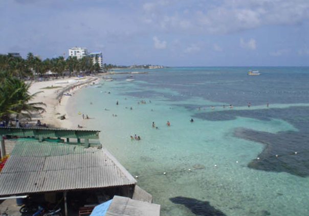
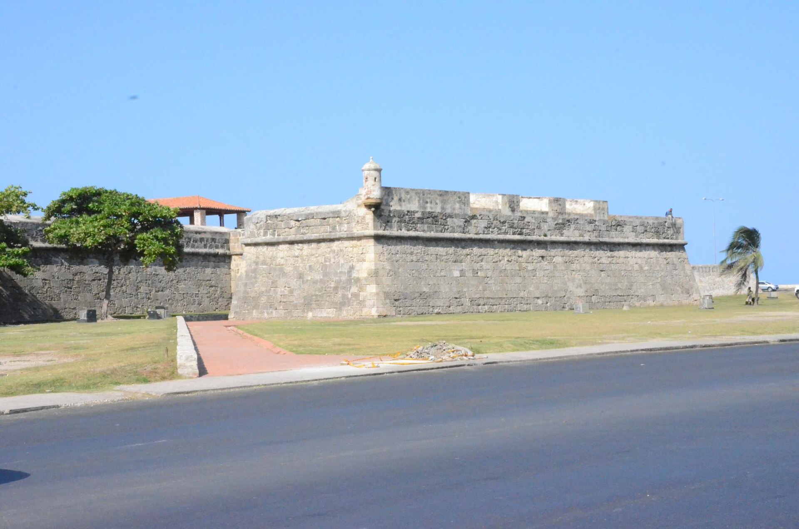
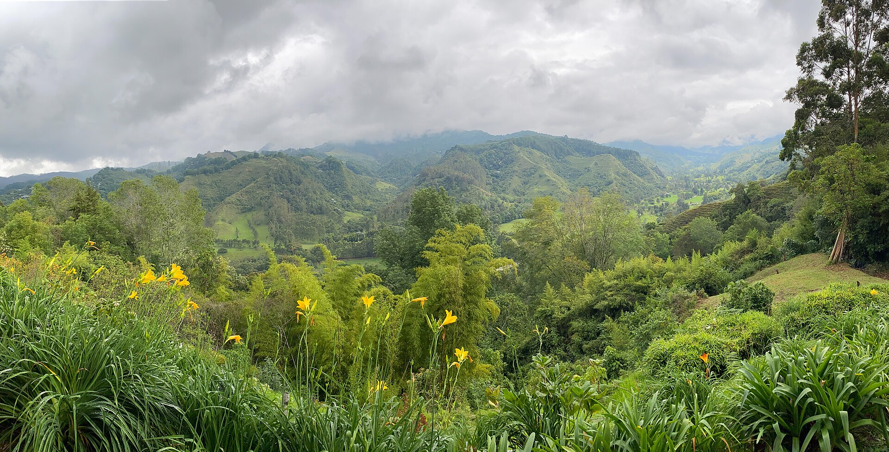
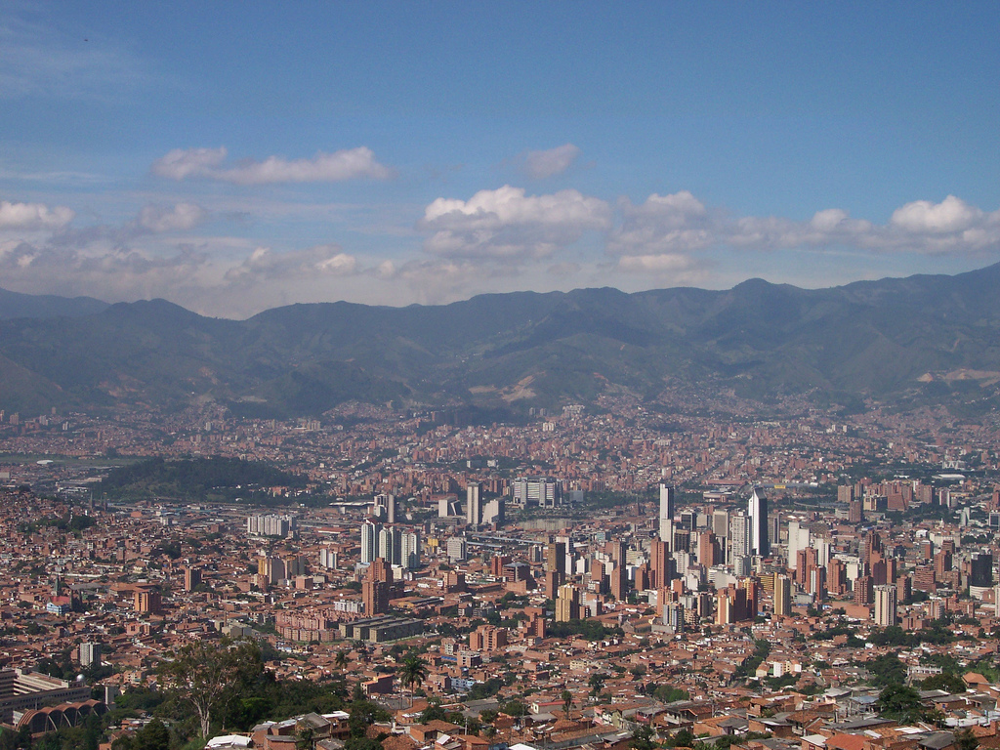
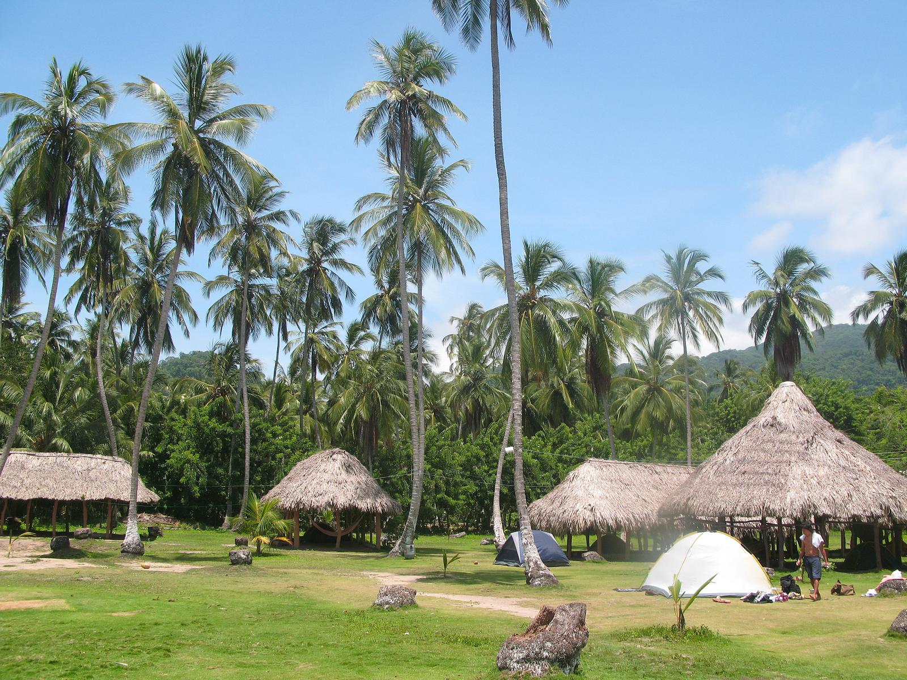
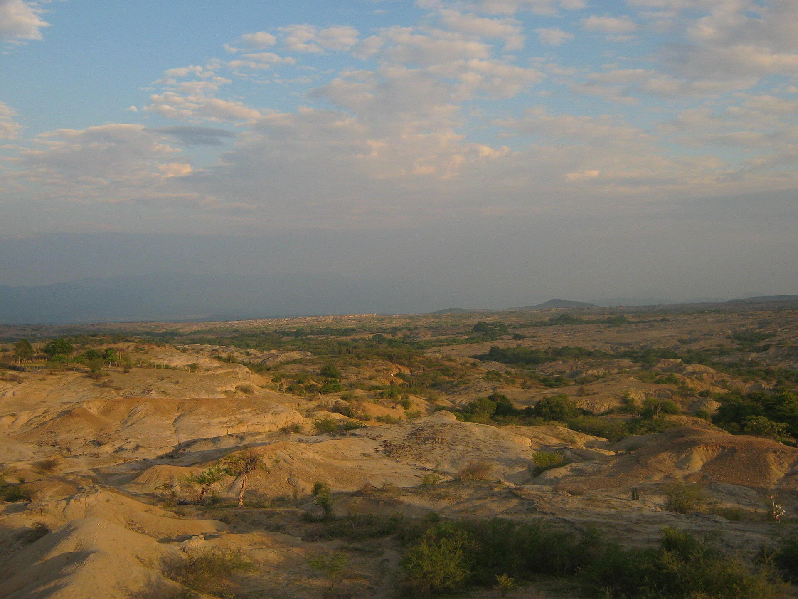
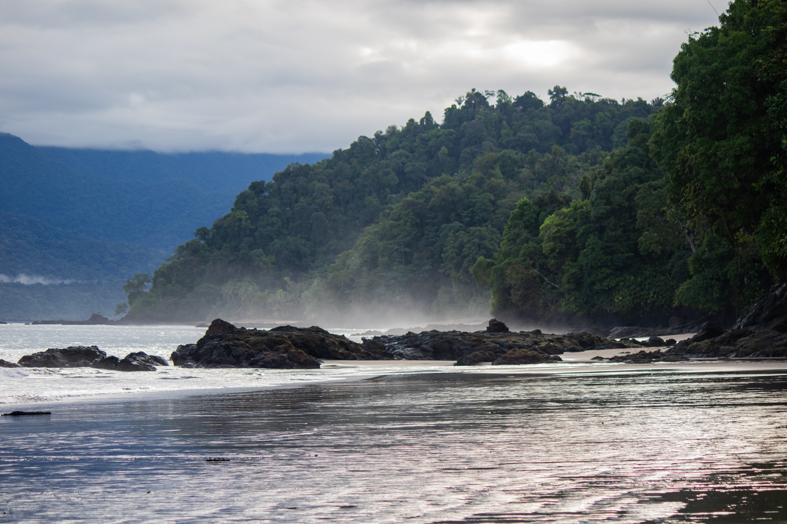
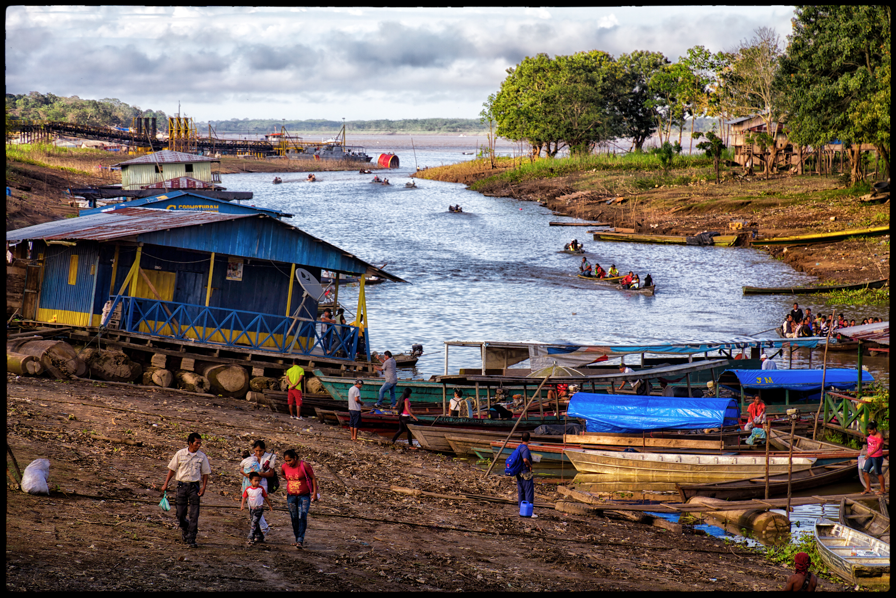
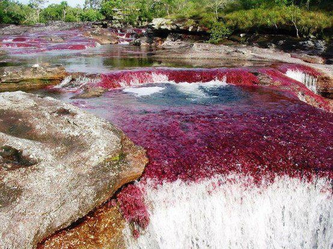

Destinos

San Andrés
San Andrés es un destino turístico popular en Colombia, conocido por sus playas de arena blanca, aguas cristalinas y arrecifes de coral. La isla ofrece una variedad de actividades acuáticas, como snorkel, buceo y paseos en bote.

Cartagena de Indias
Famosa por su arquitectura colonial, sus coloridas calles dentro de la ciudad amurallada y sus hermosas playas. Es un destino lleno de historia, gastronomía y encanto del Caribe colombiano.

Eje Cafetero
Hogar de los majestuosos palmas de cera en el Valle de Cocora y de las tradicionales fincas cafeteras. Ideal para los amantes de la naturaleza, el buen café y los paisajes montañosos.

Medellín
Conocida como la ciudad de la eterna primavera. Destaca por su innovación, cultura, eventos como la Feria de las Flores y atractivos como el Peñol de Guatapé a pocas horas de la ciudad.

Parque Tayrona
Un paraíso donde la selva tropical se encuentra con el mar Caribe. Perfecto para hacer senderismo, disfrutar de playas vírgenes y desconectarse en medio de la naturaleza.

Desierto de la Tatacoa
Un impresionante paisaje árido en el departamento del Huila. Es uno de los mejores lugares en Colombia para el turismo astronómico y la observación de estrellas gracias a sus cielos despejados.

Bahía Solano
Ubicada en el Pacífico colombiano, es un santuario natural perfecto para el avistamiento de ballenas jorobadas, caminatas por la selva y el ecoturismo en playas vírgenes.

Leticia (Amazonas)
La puerta de entrada al Amazonas colombiano. Un destino fascinante para explorar la selva tropical, navegar por el río y conocer la rica biodiversidad y cultura indígena.

Caño Cristales
Conocido como el "río de los cinco colores", ubicado en La Macarena. Sus aguas cristalinas revelan plantas acuáticas de tonos rojos, amarillos y verdes únicos en el mundo.